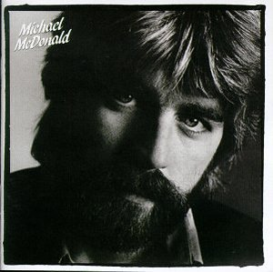

Zach Williams
Welcome! This portion of the website will detail my interests, career goals, and talents. I made it pink because my wife said it would be funny. Thank you for looking!
Interests
My main interests are centered around music. This list includes some of my favorite genres and three bands/artists within each genre.
- Death Metal
- Cannibal Corpse
- Morbid Angel
- Suffocation
- Heavy Metal
- Dio
- Judas Priest
- Mercyful Fate
- Thrash Metal
- Metallica
- Slayer
- Power Trip
- Hardcore
- King Nine
- Trapped Under Ice
- Twitching Tongues
- Yacht Rock
- Michael Mcdonald
- Michael Mcdonald
- Michael Mcdonald
- (Yes, this was on purpose. All other yacht rock sucks. Only Michael Mcdonald matters.)
Talents
Coincidentally, my talents also include music. I play guitar, drums, and I currently sing in a death metal band. I would include coding as a new found passion and developing talent of mine. I've had so much fun learning about all the moving parts of websites and how they function
Career Goals
Once I graduate DevMountain, I would love to find a QA job in coding, and hopefully work my way up to a developer from there.
More Favorites
Michael Mcdonald
Just because.
